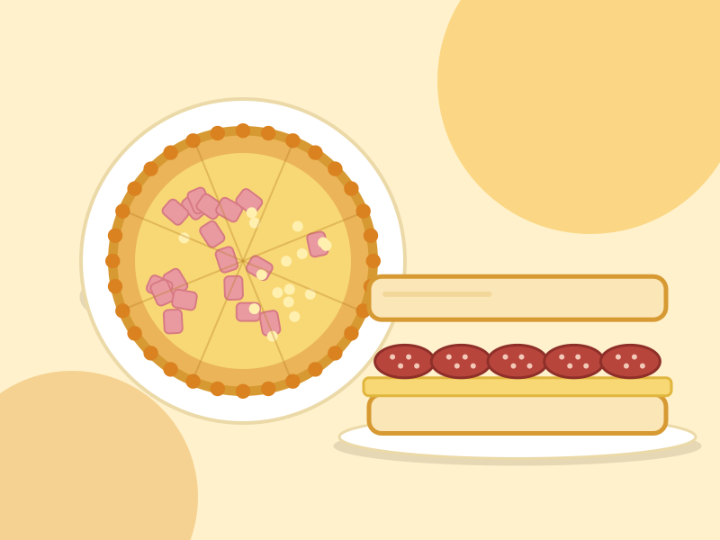

Cocinar en familia
La Cocina de Dos es un emprendimiento entre mi mamá y yo. Hacemos tartas de verdura, de jamón y queso y de pollo y puerro, además de sanguches de jamón y queso y de salame y queso.
Creemos en la comida casera, en los sabores de siempre y en trabajar juntos. Cada pedido es una forma de compartir lo que más nos gusta hacer.
Escribinos
Cómo trabajamos
-
Elegimos los ingredientes
Empezamos por lo básico: ingredientes para que cada tarta y cada sanguche tengan buen sabor.
-
Cocinamos juntos
Mamá y yo nos repartimos la cocina y armamos cada pedido con dedicación.
-
Armamos tu pedido
Preparamos las tartas y los sanguches que elegiste, listos para disfrutar.
-
Coordinamos la entrega
Te escribimos por WhatsApp y acordamos cómo y cuándo recibirlo.
Lo que nos define
-
Sabores de siempre
Recetas caseras y simples que gustan a todos.
-
Dos manos, una cocina
Trabajamos juntos para que cada pedido salga bien.
-
Hecho con cariño
Cada tarta y cada sanguche lleva dedicación.
¿Se te antojó algo rico?
Contanos qué querés y lo preparamos para vos. Pedir es muy fácil.
Hacer un pedido